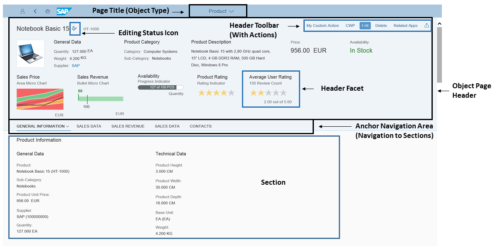

The object page allows users to display, edit and create objects, and save drafts. It is suitable for both simple objects and more complex, multi-faceted objects. The object page view offers optimal support for multiple devices.
Example of an object page view (Display mode):
The object page is made up of the following elements:
Page title which is set to the object type, product, for example, product
Object header including the following:
Title and subtitle
Header toolbar, containing generic actions (in Display mode)
A description
If the instance does not provide an image, then the default image of the object type is used.
Buttons in the header toolbar for use case-specific actions, for example, Edit and Delete
Label-field pairs, to show, for example, price or availability. We recommend using a maximum of five label-field pairs.
Anchor navigation area that lets users navigate to the individual content area sections
The footer bar of sub-item object pages also includes the Apply button, in create and edit mode. This action concludes the current create or edit activity, saves the draft, and navigates one step up in the object hierarchy. A toast message is displayed if the operation was successful.
|
Subject |
Link |
|---|---|
|
Controls related to object pages |
|
|
Annotations used to set up various elements of object pages |